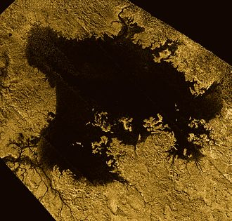
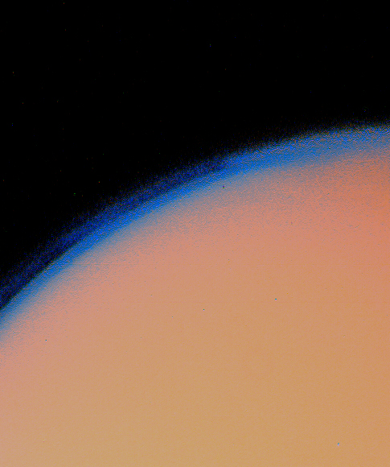
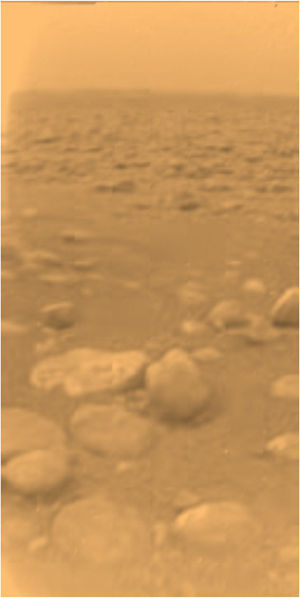

Titan
Titan is the biggest satellite orbiting Saturn and is one of two satellites bigger than the planet Mercury, the other being the Jovian moon Ganymede.
It is named for the race of pre-Olympian deities from Greek Mythology.
Titan was discovered by Christiaan Huygens in 1655.
Titan has a thick orange athmosphere composed mostly of nitrogen and methane, in contrast to other moons that have tenuous atmospheres.
It is also the only other known body to have stable liquid geographical features beside Earth - methane lakes are concentrated around the poles, the only possible spots on the surface for them to form.
The biggest lakes are Kraken Mare and Ligeia Mare.
The Cassini-Huygens mission that included a lander was the last to study Titan up close.
The future mission Dragonfly will make a return to Titan in 2028 and will attempt to make a landing and conduct the first powered and fully controlled atmospheric flight on a natural satellite.
Titan is named after the predecessors to the Olympian gods in Greek mythology.
John Herschel, son of William Herschel, was the first to suggest naming satellites of Saturn after titans and giants, since Cronus (Greek analogue of the Roman Saturn) is their leader.
Before that, it was refered to as "moon of Saturn" by Christiaan Huygens, who discovered the moon,
Inspired by Galileo's discovery of the moons of Jupiter, Christiaan Huygens constructed his own telescope with a greater magnification.
He discovered Titan in 1655 and later published his observations of Saturn in his Systema Saturnium.
Orbit and rotation
Titan orbits Saturn at an average distance of about 1.2 million kilometers, completing one orbit every 15.9 Earth days.
On average, it is the second most distant from Saturn of the round moons after Iapetus and 22nd closest among all satellites.
It is also in 3:4 resonance with Hyperion.
Like many moons in the Solar System, Titan is tidally locked to Saturn.
This synchronous rotation results in a day on Titan that lasts as long as its year.
Titan’s orbit's eccentricity is 0.029, the highest among the round moons of Saturn, and the inclination is 0.3.
Titan is the second-largest moon in the solar system, surpassed only by Jupiter’s Ganymede.
With a radius of 2,575 kilometers, Titan is larger than the planet Mercury.
Despite this, it still has a lower mass (1.345 × 10^23 kg), due to Mercury's metal-rich composition.
Based on its density of 1.881 g/cm^3, Titan is composed of 40-60% rocks, with the rest being mostly ice.
Titan most likely has a differentiated internal structure.
The core is most likely consisting of silicate rocks, surrounded by several layers of ice and a global subsurface ocean of liquid water and ammonia.
This ocean, potentially up to 100 kilometers deep, is kept liquid by tidal forces from Saturn and the decay of radioactive elements.
Above the ocean lies a crust of water ice.
The presence of a subsurface ocean makes Titan a compelling candidate in the search for extraterrestrial life.

Ligeia Mare, second largest sea on Titan
Titan’s surface is geologically young and diverse.
The equatorial regions are dominated by vast, dark dune fields possibly composed of organic particles, shaped by Titan’s winds.
The equatorial regions are dominated by dark regions of vast dune fields composed of organic particles, shaped by Titan’s winds.
The biggest dark regions include Shangri-La, Belet, and Fensal.
In contrast, there are bright, icy terrains like Xanadu, that are carved by liquid methane flows.
The low surface temperatures, especially at the poles, have created an environment, suitable for hydrocarbon lakes and rivers.
At the North Pole, there are three lakes that are refered to as seas - Kraken, Ligeia, and Punga Mare.
There are also several smaller lakes like Jingpo and Neagh Lacus.
Dried seeabeds (lacunae) include Woytchugga Lacuna, the biggest on Titan.
The South pole is more sparse in lakes, the biggest of which is Ontario Lacus.
Instead, there are mostly dried-up seabed plains like Arrakis Planitia.
Lakes continue to form there, possibly due to seasonal changes, as it is evident by photographs in 2004 and 2005, showing a new lake appearing in Arrakis Planitia.
Latitudes closer to the Equator have fewer lakes.
Two of the closest to the Equator known lakes are the small Urmia and Sionascaig Lacus inside Polaznik Macula.
There is also likely geological activity like cryovolcanism and tectonism.
It has not been confirmed yet, but features that are most likely to have formed by geological activity include Erebor and Doom Mons, as well as Sotra Patera within the dark Aztlan region.
There are also a few craters on Titan.
Some of the largest include Menrva, Sinlap and Selk, the latter being the future landing site for Dragonfly.
Methane and other hydrocarbons are equivalent to water on Earth in the sense that both play a role in the climate of their respective planet/moon and shape the surface in their liquid form.
Hydrocarbons, particularly methane, exist as a gas in the atmosphere, a liquid on the surface, and a solid in the form of ice.
Methane rain falls from the sky, carving river channels and filling lakes, especially in the polar regions, where they are either permanent, or seasonal.
This methane cycle drives weather patterns, forms clouds, and contributes to the erosion of the surface.
The presence of liquid hydrocarbons makes Titan a potential host of prebiotic components that could form life.

Titan's orange and blue haze seen by Voyager 1
Titan's atmosphere is about 1.5 times as dense as Earth’s and extends much higher above the surface.
It is also one of two natural satellites that can sustain clouds in the atmosphere, the other being Triton.
Just like Earth's, it can be divided into distinctive troposphere, stratosphere, mesosphere, and thermosphere layers.
Titan’s atmosphere is primarily nitrogen (about 98% in the stratosphere and 95% in the troposphere), with the remaining 5% consisting of mostly methane and some hydrogen.
The atmosphere also contains trace amounts of other hydrocarbons (ethane, diacetylene, etc.) and other gases (cyanoacetylene hydrogen cyanide, carbon dioxide, etc.).
The origin of the methane is most likely from cryovolcanoes, which constantly replenish the atmosphere.
Otherwise, all of the methane would have converted to more complex hydrocarbons.
The thick atmosphere creates both a greenhouse and an anti-greenhouse effect that heats up the surface and produces a dense, orange haze that obscures much of the visible light.
90% of the sunlight that reaches Titan gets absorbed by the atmosphere.
Complex chemical reactions in the stratosphere between methane and nitrogen, driven by UV light and cosmic rays, produce organic molecules called tholins, which give Titan its distinctive color.
The mesosphere is poor in tholins, resulting in a bluish haze layer.
The surface temperature on Titan is 94 K, which results in solid water ice and almost no water vapors, and liquid hydrocarbons.

First and only picture of the surface of Titan, taken by the Huygens lander.
The first mission to visit Saturn and observe Titan was Pioneer 11 in 1979, concluding that Titan is too cold to sustain life.
Soon, the two Voyager missions in the following two years observed Titan and gathered data about its size and composition.
Images were with higher definition, but were unable to examine the surface.
Of the two, Voyager 1 approached Titan much closer and was able to provide data for some of the other moons for the first time.
The Cassini-Huygens mission by NASA and ESA provided the most detailed study of Titan to date.
The Huygens atmospheric probe landed on Titan’s surface in January 2005, sending back the first images from the ground and analyzing the atmosphere and surface composition.
It lost contact less than an hour after landing.
Cassini continued to study Titan for 13 years, using radar to map the surface and instruments to analyze the atmosphere and the surface.
It was the first to discover the abundance of liquid hydrocarbons.
Future missions, such as NASA’s Dragonfly rotorcraft lander, are planned to further explore Titan.
Dragonfly, set to launch in the mid-2030s, will land on the Selk crater in Shangri-La from which it would fly to multiple locations on Titan’s surface, studying its chemistry and searching for signs of life.
There are several other proposed concepts for missions, centered around studying the seas and lakes of Titan, as well as more broad Saturn moon missions that would have prioritized Titan and Enceladus, the two most active moons of the system.
External links